from bioMONAI.data import *
from bioMONAI.transforms import *
from bioMONAI.core import *
from bioMONAI.core import Path
from bioMONAI.data import get_images, get_target, RandomSplitter
from bioMONAI.losses import *
from bioMONAI.losses import SSIMLoss
from bioMONAI.metrics import *
from bioMONAI.datasets import download_files3D Segmentation
Tutorial 3D Segmentation: This tutorial provides a comprehensive, step-by-step guide to using the bioMONAI platform for nuclei segmentation in histopathology images.
Setup imports
import warnings
warnings.filterwarnings("ignore")device = get_device()
print(device)cudaDownload Data
In the next cell, we will download the dataset required for this tutorial. The dataset is hosted online, and we will use the download_file function from the bioMONAI library to download and extract the files.
- You can change the
output_directoryvariable to specify a different directory where you want to save the downloaded files.- The
urlvariable contains the link to the dataset. If you have a different dataset, you can replace this URL with the link to your dataset.- By default, we are downloading only the first two images. You can modify the code to download more images if needed.
Make sure you have enough storage space in the specified directory before downloading the dataset.
# Specify the directory where you want to save the downloaded files
output_directory = "../_data/HL60"
output_dirs = ['HighNoise_C00',
'HighNoise_C25',
'HighNoise_C50',
'HighNoise_C75']
output_dirs = [Path(output_directory)/d for d in output_dirs]
# Define the URLs for the dataset
urls = ['https://datasets.gryf.fi.muni.cz/cytometry2009/HL60_HighNoise_C00_3D_TIFF.zip',
'https://datasets.gryf.fi.muni.cz/cytometry2009/HL60_HighNoise_C25_3D_TIFF.zip',
'https://datasets.gryf.fi.muni.cz/cytometry2009/HL60_HighNoise_C50_3D_TIFF.zip',
'https://datasets.gryf.fi.muni.cz/cytometry2009/HL60_HighNoise_C75_3D_TIFF.zip']
download_files(urls, output_dirs, extract=True, extract_dir='.')Downloading file 1/4: https://datasets.gryf.fi.muni.cz/cytometry2009/HL60_HighNoise_C00_3D_TIFF.zip
The file has been downloaded and saved to: /home/bm/Documents/bioMONAI/nbs/_data/HL60/HighNoise_C00
Downloading file 2/4: https://datasets.gryf.fi.muni.cz/cytometry2009/HL60_HighNoise_C25_3D_TIFF.zip
The file has been downloaded and saved to: /home/bm/Documents/bioMONAI/nbs/_data/HL60/HighNoise_C25
Downloading file 3/4: https://datasets.gryf.fi.muni.cz/cytometry2009/HL60_HighNoise_C50_3D_TIFF.zip
The file has been downloaded and saved to: /home/bm/Documents/bioMONAI/nbs/_data/HL60/HighNoise_C50
Downloading file 4/4: https://datasets.gryf.fi.muni.cz/cytometry2009/HL60_HighNoise_C75_3D_TIFF.zip
The file has been downloaded and saved to: /home/bm/Documents/bioMONAI/nbs/_data/HL60/HighNoise_C75Prepare Data for Training
In the next cell, we will prepare the data for training. We will specify the path to the training images and define the batch size and patch size. Additionally, we will apply several transformations to the images to augment the dataset and improve the model’s robustness.
X_path: The path to the directory containing the low-resolution training images.bs: The batch size, which determines the number of images processed together in one iteration.patch_size: The size of the patches to be extracted from the images.itemTfms: A list of item-level transformations applied to each image, including random cropping, rotation, and flipping.batchTfms: A list of batch-level transformations applied to each batch of images, including intensity scaling.get_target_fn: A function to get the corresponding ground truth images for the low-resolution images.
You can customize the following parameters to suit your needs: - Change the
X_pathvariable to point to a different dataset. - Adjust thebsandpatch_sizevariables to match your hardware capabilities and model requirements. - Modify the transformations initemTfmsandbatchTfmsto include other augmentations or preprocessing steps.
After defining these parameters and transformations, we will create a BioDataLoaders object to load the training and validation datasets.
# Get the paths of the images in the HighNoise folders, filtering for files that contain 'final' in their name
img_paths = get_images(output_directory,'HighNoise*', filename_filter='*final*.tif')
# create a function to get the target path from the image path, masks are in the same folder and have the same filename but with 'labels' instead of 'final'
get_target_fn = get_target('', same_filename=False, same_foldername=True, target_file_prefix='labels', signal_file_prefix='final')
# Check that the functions work as expected
print('input:', img_paths[0], '\nmask:', get_target_fn(img_paths[0]))input: ../_data/HL60/HighNoise_C00/image-final_0026.tif
mask: ../_data/HL60/HighNoise_C00/image-labels_0026.tifimport numpy as np
from skimage.filters import threshold_otsu
def otsu_threshold(im):
th = threshold_otsu(im)
return im*(im>th)
otsu = FunctionTransform(otsu_threshold)tfms_before_patching = [Resample(4, mode='nearest'),
TargetedTransform(ScaleImageVariance(),targets=('X',)),
# TargetedTransform(otsu,targets=('X',)),
]
tfms_after_patching = [TargetedTransform(RelabelInstances(), targets=('y',))]gt_paths = [get_target_fn(img_paths[i]) for i in range(len(img_paths))]
patch_size = (1, 33, 90, 90)
overlap = 0.75
save_patches_grid(img_paths, gt_paths, output_directory, patch_size, overlap, squeeze_input=False, squeeze_patches=True,
tfms_before=tfms_before_patching, tfms_after=tfms_after_patching, use_parent_folder=True)Processing files: 100%|██████████| 120/120 [02:23<00:00, 1.20s/it]Train set saved to '../_data/HL60/patches_train.csv'.
Test set saved to '../_data/HL60/patches_test.csv'.
'is_valid' column added to '../_data/HL60/patches_train.csv' for validation samples.from bioMONAI.io import hdf5_reader
from bioMONAI.visualize import show_images_grid
file_path = output_directory + '/HighNoise_C00/image-final_0026.h5/X/1'
im , _ = hdf5_reader()(file_path)
print(im.shape)
file_path = output_directory + '/HighNoise_C00/image-final_0026.h5/y/1'
im2 , _ = hdf5_reader()(file_path)
print(im2.shape)(33, 90, 90)
(33, 90, 90)show_images_grid(im, cmap='cividis', figsize=(10,5), ncols=8);
show_images_grid(im2, cmap='cividis', figsize=(10,5), ncols=8);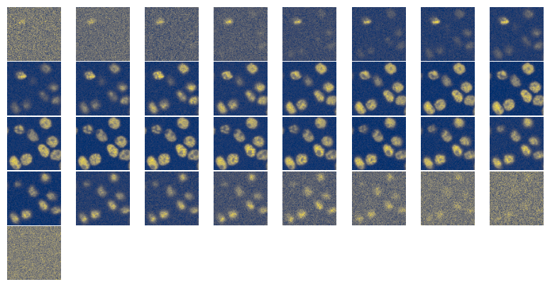
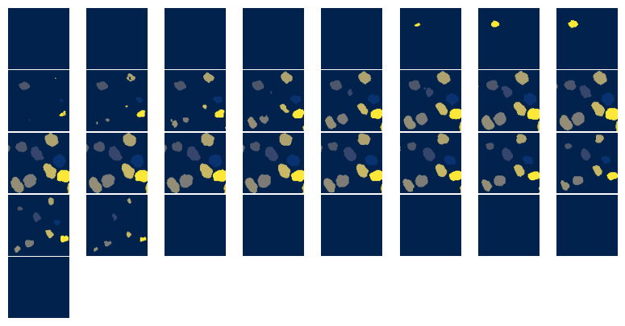
from bioMONAI.visualize import plot_intensity_histogram
plot_intensity_histogram(im[0], bins=20);
plot_intensity_histogram(im[15], bins=20);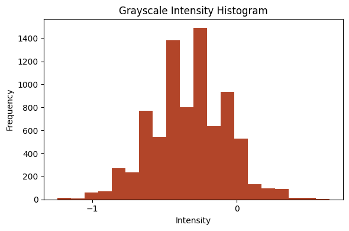
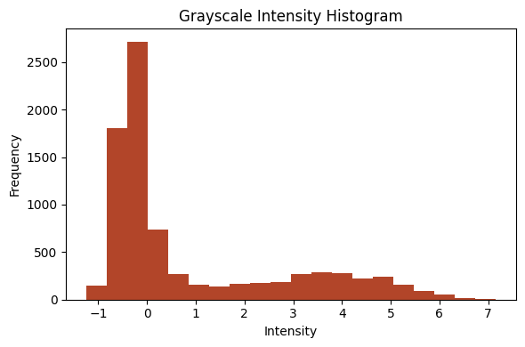
data_ops = {
'fn_col': ['path_signal'],
'target_col': ['path_target'],
'valid_col': ['is_valid'],
'seed': 42,
'bs': 16,
'img_cls': BioImageMulti,
'target_img_cls': BioImageMulti, # class for target images
'item_tfms': [RandRot90(prob=.75, spatial_axes=(-2,-1)),
RandFlip(prob=0.75, ndim=2)],
'batch_tfms': [], # batch transformations
}
data = BioDataLoaders.from_csv(
'',
output_directory + '/patches_train.csv',
show_summary=True,
**data_ops,
)
# print length of training and validation datasets
print('train images:', len(data.train_ds.items), '\nvalidation images:', len(data.valid_ds.items))Setting-up type transforms pipelines
Collecting items from path_signal \
0 ../_data/HL60/HighNoise_C75/image-final_0009.h5/X/16
1 ../_data/HL60/HighNoise_C25/image-final_0026.h5/X/3
2 ../_data/HL60/HighNoise_C25/image-final_0017.h5/X/5
3 ../_data/HL60/HighNoise_C50/image-final_0005.h5/X/17
4 ../_data/HL60/HighNoise_C00/image-final_0010.h5/X/8
... ...
1722 ../_data/HL60/HighNoise_C50/image-final_0006.h5/X/3
1723 ../_data/HL60/HighNoise_C50/image-final_0020.h5/X/5
1724 ../_data/HL60/HighNoise_C75/image-final_0027.h5/X/10
1725 ../_data/HL60/HighNoise_C75/image-final_0027.h5/X/7
1726 ../_data/HL60/HighNoise_C75/image-final_0004.h5/X/15
path_target is_valid
0 ../_data/HL60/HighNoise_C75/image-final_0009.h5/y/16 0
1 ../_data/HL60/HighNoise_C25/image-final_0026.h5/y/3 0
2 ../_data/HL60/HighNoise_C25/image-final_0017.h5/y/5 0
3 ../_data/HL60/HighNoise_C50/image-final_0005.h5/y/17 0
4 ../_data/HL60/HighNoise_C00/image-final_0010.h5/y/8 0
... ... ...
1722 ../_data/HL60/HighNoise_C50/image-final_0006.h5/y/3 1
1723 ../_data/HL60/HighNoise_C50/image-final_0020.h5/y/5 1
1724 ../_data/HL60/HighNoise_C75/image-final_0027.h5/y/10 0
1725 ../_data/HL60/HighNoise_C75/image-final_0027.h5/y/7 0
1726 ../_data/HL60/HighNoise_C75/image-final_0004.h5/y/15 0
[1727 rows x 3 columns]
Found 1727 items
2 datasets of sizes 1511,216
Setting up Pipeline: ColReader -- {'cols': ['path_signal'], 'pref': './', 'suff': '', 'label_delim': None}
-> BioImageMulti.create -> Tensor2BioImage -- {}
Setting up Pipeline: ColReader -- {'cols': ['path_target'], 'pref': './', 'suff': '', 'label_delim': None}
-> BioImageMulti.create -> Tensor2BioImage -- {}
Building one sample
Pipeline: ColReader -- {'cols': ['path_signal'], 'pref': './', 'suff': '', 'label_delim': None}
-> BioImageMulti.create -> Tensor2BioImage -- {}
starting from
path_signal ../_data/HL60/HighNoise_C75/image-final_0009.h5/X/16
path_target ../_data/HL60/HighNoise_C75/image-final_0009.h5/y/16
is_valid 0
Name: 0, dtype: object
applying ColReader -- {'cols': ['path_signal'], 'pref': './', 'suff': '', 'label_delim': None}
gives
./../_data/HL60/HighNoise_C75/image-final_0009.h5/X/16
applying BioImageMulti.create gives
BioImageMulti of size 33x90x90
applying Tensor2BioImage -- {}
gives
BioImageMulti of size 33x90x90
Pipeline: ColReader -- {'cols': ['path_target'], 'pref': './', 'suff': '', 'label_delim': None}
-> BioImageMulti.create -> Tensor2BioImage -- {}
starting from
path_signal ../_data/HL60/HighNoise_C75/image-final_0009.h5/X/16
path_target ../_data/HL60/HighNoise_C75/image-final_0009.h5/y/16
is_valid 0
Name: 0, dtype: object
applying ColReader -- {'cols': ['path_target'], 'pref': './', 'suff': '', 'label_delim': None}
gives
./../_data/HL60/HighNoise_C75/image-final_0009.h5/y/16
applying BioImageMulti.create gives
BioImageMulti of size 33x90x90
applying Tensor2BioImage -- {}
gives
BioImageMulti of size 33x90x90
Final sample: (BioImageMulti([[[-0.4833, 0.0012, -0.4833, ..., -0.6045, -0.3016, -0.4833],
[-0.6650, -0.5439, -0.4833, ..., -0.1200, -0.9073, -0.8467],
[-0.5439, -0.3622, -0.9679, ..., -0.2411, -0.5439, -0.4228],
...,
[-0.7256, 0.1829, -0.3016, ..., -0.4833, -0.3622, 0.1223],
[-0.6650, -0.5439, -0.2411, ..., -0.3016, 0.0617, -0.2411],
[-0.4228, 0.3040, -0.4228, ..., -0.3622, -0.2411, -0.2411]],
[[-0.4228, -0.4833, -0.3622, ..., -0.1200, -0.7256, -0.1805],
[-0.3016, 0.0012, -0.4833, ..., 0.0617, -0.3016, -0.5439],
[-0.1200, -0.1805, -0.4228, ..., -0.5439, -0.1805, -0.3622],
...,
[ 0.3040, -0.6650, 0.0617, ..., -0.4833, -0.3016, 0.2434],
[-0.1200, 0.1223, -0.3016, ..., 0.0012, -0.8467, -0.3016],
[-0.6650, -0.0594, -0.3016, ..., -0.3622, -0.1200, -0.3622]],
[[-0.3622, 0.0012, -0.2411, ..., -0.1805, -0.0594, -0.3016],
[-0.2411, -0.4228, 0.1223, ..., -0.1805, -0.7256, -0.1200],
[-0.4833, -0.4228, -0.3622, ..., -0.3016, 0.1829, 0.0617],
...,
[-0.6045, -0.1200, -0.4228, ..., -0.1200, -0.5439, -0.3016],
[ 0.1829, -0.2411, -0.4228, ..., -0.2411, -0.3016, -0.3016],
[-0.1805, -0.1200, -0.4228, ..., -0.1805, -0.2411, -0.7256]],
...,
[[-0.3016, -0.6045, -0.6650, ..., -0.3016, 0.1829, -0.1200],
[-0.7862, -0.3622, -0.0594, ..., -0.4228, -0.0594, -0.2411],
[-0.1200, -0.4833, -0.3016, ..., 0.2434, -0.4833, -0.5439],
...,
[-0.3016, 0.0617, -0.0594, ..., 0.1223, -0.1200, -0.4833],
[-0.7862, -0.3016, -0.4833, ..., -0.6650, 0.1223, -0.4228],
[-0.1805, -0.3016, -0.3016, ..., -0.3016, -0.6650, -0.3622]],
[[-0.4833, -0.3016, 0.0012, ..., -0.2411, -0.1200, -0.4833],
[-0.3622, -0.4833, 0.1829, ..., -0.5439, 0.1829, -0.1805],
[ 0.0617, -0.1200, -0.9073, ..., -0.2411, -0.1805, -0.1200],
...,
[-0.7256, -0.1200, -0.3622, ..., -0.9679, -0.1805, 0.1223],
[-0.3622, -0.2411, -0.3016, ..., -0.3622, -0.2411, -0.4833],
[-0.3016, -0.5439, -0.5439, ..., -0.7256, -0.3622, -0.4228]],
[[ 0.0617, -0.2411, -0.4833, ..., -0.6650, -0.6045, 0.0012],
[-0.6650, 0.0617, 0.0617, ..., -0.2411, -0.7256, -0.4833],
[-0.5439, 0.0617, -0.4833, ..., -0.5439, -0.6650, 0.0617],
...,
[-0.2411, 0.1223, -0.0594, ..., -0.2411, -0.3622, -0.1200],
[ 0.0617, -0.4228, -0.3622, ..., 0.0617, -0.4228, -0.2411],
[-0.5439, -0.1805, -0.1805, ..., 0.0012, -0.3016, -0.3622]]]), BioImageMulti([[[0., 0., 0., ..., 0., 0., 0.],
[0., 0., 0., ..., 0., 0., 0.],
[0., 0., 0., ..., 0., 0., 0.],
...,
[0., 0., 0., ..., 0., 0., 0.],
[0., 0., 0., ..., 0., 0., 0.],
[0., 0., 0., ..., 0., 0., 0.]],
[[0., 0., 0., ..., 0., 0., 0.],
[0., 0., 0., ..., 0., 0., 0.],
[0., 0., 0., ..., 0., 0., 0.],
...,
[0., 0., 0., ..., 0., 0., 0.],
[0., 0., 0., ..., 0., 0., 0.],
[0., 0., 0., ..., 0., 0., 0.]],
[[0., 0., 0., ..., 0., 0., 0.],
[0., 0., 0., ..., 0., 0., 0.],
[0., 0., 0., ..., 0., 0., 0.],
...,
[0., 0., 0., ..., 0., 0., 0.],
[0., 0., 0., ..., 0., 0., 0.],
[0., 0., 0., ..., 0., 0., 0.]],
...,
[[0., 0., 0., ..., 0., 0., 0.],
[0., 0., 0., ..., 0., 0., 0.],
[0., 0., 0., ..., 0., 0., 0.],
...,
[0., 0., 0., ..., 0., 0., 0.],
[0., 0., 0., ..., 0., 0., 0.],
[0., 0., 0., ..., 0., 0., 0.]],
[[0., 0., 0., ..., 0., 0., 0.],
[0., 0., 0., ..., 0., 0., 0.],
[0., 0., 0., ..., 0., 0., 0.],
...,
[0., 0., 0., ..., 0., 0., 0.],
[0., 0., 0., ..., 0., 0., 0.],
[0., 0., 0., ..., 0., 0., 0.]],
[[0., 0., 0., ..., 0., 0., 0.],
[0., 0., 0., ..., 0., 0., 0.],
[0., 0., 0., ..., 0., 0., 0.],
...,
[0., 0., 0., ..., 0., 0., 0.],
[0., 0., 0., ..., 0., 0., 0.],
[0., 0., 0., ..., 0., 0., 0.]]]))
Collecting items from path_signal \
0 ../_data/HL60/HighNoise_C75/image-final_0009.h5/X/16
1 ../_data/HL60/HighNoise_C25/image-final_0026.h5/X/3
2 ../_data/HL60/HighNoise_C25/image-final_0017.h5/X/5
3 ../_data/HL60/HighNoise_C50/image-final_0005.h5/X/17
4 ../_data/HL60/HighNoise_C00/image-final_0010.h5/X/8
... ...
1722 ../_data/HL60/HighNoise_C50/image-final_0006.h5/X/3
1723 ../_data/HL60/HighNoise_C50/image-final_0020.h5/X/5
1724 ../_data/HL60/HighNoise_C75/image-final_0027.h5/X/10
1725 ../_data/HL60/HighNoise_C75/image-final_0027.h5/X/7
1726 ../_data/HL60/HighNoise_C75/image-final_0004.h5/X/15
path_target is_valid
0 ../_data/HL60/HighNoise_C75/image-final_0009.h5/y/16 0
1 ../_data/HL60/HighNoise_C25/image-final_0026.h5/y/3 0
2 ../_data/HL60/HighNoise_C25/image-final_0017.h5/y/5 0
3 ../_data/HL60/HighNoise_C50/image-final_0005.h5/y/17 0
4 ../_data/HL60/HighNoise_C00/image-final_0010.h5/y/8 0
... ... ...
1722 ../_data/HL60/HighNoise_C50/image-final_0006.h5/y/3 1
1723 ../_data/HL60/HighNoise_C50/image-final_0020.h5/y/5 1
1724 ../_data/HL60/HighNoise_C75/image-final_0027.h5/y/10 0
1725 ../_data/HL60/HighNoise_C75/image-final_0027.h5/y/7 0
1726 ../_data/HL60/HighNoise_C75/image-final_0004.h5/y/15 0
[1727 rows x 3 columns]
Found 1727 items
2 datasets of sizes 1511,216
Setting up Pipeline: ColReader -- {'cols': ['path_signal'], 'pref': './', 'suff': '', 'label_delim': None}
-> BioImageMulti.create -> Tensor2BioImage -- {}
Setting up Pipeline: ColReader -- {'cols': ['path_target'], 'pref': './', 'suff': '', 'label_delim': None}
-> BioImageMulti.create -> Tensor2BioImage -- {}
Setting up after_item: Pipeline: RandRot90 -- {'prob': 0.75, 'k': 1, 'max_k': 3, 'spatial_axes': (-2, -1), 'ndim': 2, 'lazy': False, 'p': 1.0}
-> RandFlip -- {'prob': 0.75, 'spatial_axis': None, 'ndim': 2, 'lazy': False}
-> ToTensor
Setting up before_batch: Pipeline:
Setting up after_batch: Pipeline:
Building one batch
Applying item_tfms to the first sample:
Pipeline: RandRot90 -- {'prob': 0.75, 'k': 1, 'max_k': 3, 'spatial_axes': (-2, -1), 'ndim': 2, 'lazy': False, 'p': 1.0}
-> RandFlip -- {'prob': 0.75, 'spatial_axis': None, 'ndim': 2, 'lazy': False}
-> ToTensor
starting from
(BioImageMulti of size 33x90x90, BioImageMulti of size 33x90x90)
applying RandRot90 -- {'prob': 0.75, 'k': 1, 'max_k': 3, 'spatial_axes': (-2, -1), 'ndim': 2, 'lazy': False, 'p': 1.0}
gives
(BioImageMulti of size 33x90x90, BioImageMulti of size 33x90x90)
applying RandFlip -- {'prob': 0.75, 'spatial_axis': None, 'ndim': 2, 'lazy': False}
gives
(BioImageMulti of size 33x90x90, BioImageMulti of size 33x90x90)
applying ToTensor gives
(BioImageMulti of size 33x90x90, BioImageMulti of size 33x90x90)
Adding the next 15 samples
No before_batch transform to apply
Collating items in a batch
No batch_tfms to apply
None
train images: 1511
validation images: 216Visualize a Batch of Training Data
In the next cell, we will visualize a batch of training data to get an idea of what the images look like after applying the transformations. This step is crucial to ensure that the data augmentation and preprocessing steps are working as expected.
data.show_batch(cmap='magma'): This function will display a batch of images from the training dataset using the ‘magma’ colormap.
Change the
cmapparameter to use a different colormap (e.g., ‘gray’, ‘viridis’, ‘plasma’) based on your preference.
Visualizing the data helps in understanding the dataset better and ensures that the transformations are applied correctly.
data.show_batch(cmap='cividis')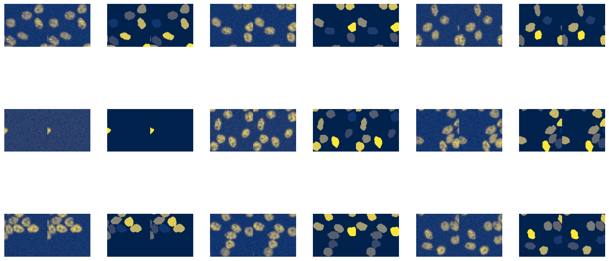
Define and Train the Model
from bioMONAI.nets import create_unet_model, resnet34
n_channels = patch_size[1]
model = create_unet_model(resnet34, n_channels, patch_size[2:], True, n_in=n_channels, cut=None, blur_final=False, self_attention=False)from bioMONAI.losses import *
from bioMONAI.metrics import *
loss = CombinedLoss(mae_weight=0.)
metrics = [DiceMetric(include_background=False, instance=True), SSIMMetric(2), MSEMetric()]
trainer = fastTrainer(data, model, loss_fn=loss, metrics=metrics, show_summary=False)trainer.fine_tune(50, freeze_epochs=2)| epoch | train_loss | valid_loss | Dice | SSIM | MSE | time |
|---|---|---|---|---|---|---|
| 0 | 0.811546 | 0.607067 | 0.713121 | 0.640630 | 1.109968 | 00:08 |
| 1 | 0.608141 | 0.602802 | 0.805892 | 0.683143 | 1.183358 | 00:08 |
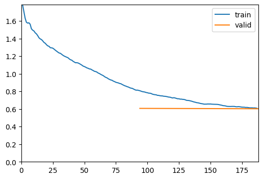
| epoch | train_loss | valid_loss | Dice | SSIM | MSE | time |
|---|---|---|---|---|---|---|
| 0 | 0.516219 | 0.506274 | 0.776129 | 0.712599 | 0.950653 | 00:08 |
| 1 | 0.490976 | 0.489013 | 0.783030 | 0.724298 | 0.922100 | 00:07 |
| 2 | 0.471562 | 0.463291 | 0.794013 | 0.740367 | 0.876778 | 00:08 |
| 3 | 0.453522 | 0.478723 | 0.823908 | 0.751707 | 0.946567 | 00:08 |
| 4 | 0.433029 | 0.437026 | 0.810949 | 0.759414 | 0.835859 | 00:07 |
| 5 | 0.415127 | 0.434696 | 0.808489 | 0.757824 | 0.825568 | 00:08 |
| 6 | 0.403240 | 0.414707 | 0.828446 | 0.765930 | 0.781455 | 00:07 |
| 7 | 0.385172 | 0.426572 | 0.834985 | 0.771460 | 0.828636 | 00:07 |
| 8 | 0.370368 | 0.463653 | 0.848284 | 0.770469 | 0.938991 | 00:07 |
| 9 | 0.361350 | 0.374823 | 0.825207 | 0.771281 | 0.671459 | 00:08 |
| 10 | 0.345890 | 0.439119 | 0.842696 | 0.767259 | 0.858127 | 00:07 |
| 11 | 0.334833 | 0.372234 | 0.844231 | 0.780909 | 0.683160 | 00:08 |
| 12 | 0.327524 | 0.526825 | 0.823308 | 0.759539 | 1.108231 | 00:07 |
| 13 | 0.318918 | 0.411107 | 0.866024 | 0.789357 | 0.818110 | 00:07 |
| 14 | 0.294800 | 0.352042 | 0.852052 | 0.784482 | 0.629226 | 00:07 |
| 15 | 0.284839 | 0.349837 | 0.859363 | 0.809991 | 0.674335 | 00:07 |
| 16 | 0.267825 | 0.306873 | 0.848616 | 0.820233 | 0.564938 | 00:07 |
| 17 | 0.248724 | 0.323201 | 0.863107 | 0.828485 | 0.631170 | 00:07 |
| 18 | 0.241533 | 0.304638 | 0.862664 | 0.833130 | 0.584351 | 00:07 |
| 19 | 0.234249 | 0.351952 | 0.863644 | 0.821691 | 0.704500 | 00:07 |
| 20 | 0.212417 | 0.270758 | 0.869480 | 0.853008 | 0.522040 | 00:08 |
| 21 | 0.202391 | 0.260705 | 0.872287 | 0.856645 | 0.498960 | 00:07 |
| 22 | 0.191303 | 0.229654 | 0.872181 | 0.870967 | 0.433945 | 00:07 |
| 23 | 0.181730 | 0.291077 | 0.865196 | 0.859840 | 0.597482 | 00:07 |
| 24 | 0.173218 | 0.213912 | 0.873976 | 0.877203 | 0.398901 | 00:07 |
| 25 | 0.165491 | 0.206696 | 0.874586 | 0.887638 | 0.398224 | 00:07 |
| 26 | 0.154142 | 0.211768 | 0.883967 | 0.888713 | 0.415776 | 00:07 |
| 27 | 0.147875 | 0.195550 | 0.880540 | 0.899664 | 0.388863 | 00:07 |
| 28 | 0.142774 | 0.210530 | 0.876144 | 0.891953 | 0.418601 | 00:07 |
| 29 | 0.137481 | 0.189002 | 0.883888 | 0.902892 | 0.375575 | 00:07 |
| 30 | 0.133169 | 0.193823 | 0.875621 | 0.902665 | 0.389724 | 00:07 |
| 31 | 0.128731 | 0.189152 | 0.881724 | 0.907770 | 0.385932 | 00:07 |
| 32 | 0.124381 | 0.176614 | 0.884985 | 0.910300 | 0.353075 | 00:08 |
| 33 | 0.119923 | 0.169921 | 0.886829 | 0.912693 | 0.337652 | 00:07 |
| 34 | 0.117236 | 0.184199 | 0.889109 | 0.907322 | 0.370013 | 00:07 |
| 35 | 0.114079 | 0.166607 | 0.890280 | 0.917249 | 0.336860 | 00:08 |
| 36 | 0.110882 | 0.165492 | 0.894460 | 0.917251 | 0.333487 | 00:07 |
| 37 | 0.109331 | 0.158600 | 0.889042 | 0.919934 | 0.318047 | 00:07 |
| 38 | 0.106516 | 0.162379 | 0.890184 | 0.920133 | 0.329905 | 00:07 |
| 39 | 0.106057 | 0.161155 | 0.890777 | 0.920162 | 0.326254 | 00:07 |
| 40 | 0.103774 | 0.157447 | 0.893741 | 0.921695 | 0.318128 | 00:07 |
| 41 | 0.104562 | 0.156143 | 0.892660 | 0.922146 | 0.315094 | 00:07 |
| 42 | 0.102328 | 0.154972 | 0.894194 | 0.922680 | 0.312629 | 00:07 |
| 43 | 0.101798 | 0.151960 | 0.891383 | 0.922955 | 0.304061 | 00:07 |
| 44 | 0.101685 | 0.153547 | 0.894828 | 0.923244 | 0.309456 | 00:07 |
| 45 | 0.101021 | 0.154230 | 0.892181 | 0.923182 | 0.311400 | 00:07 |
| 46 | 0.100030 | 0.154725 | 0.893415 | 0.923368 | 0.313278 | 00:08 |
| 47 | 0.100400 | 0.153919 | 0.893036 | 0.923350 | 0.310799 | 00:08 |
| 48 | 0.098787 | 0.153974 | 0.893915 | 0.923534 | 0.311338 | 00:08 |
| 49 | 0.099182 | 0.151619 | 0.893199 | 0.923862 | 0.304869 | 00:08 |
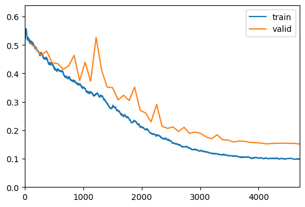
Show Results
In the next cell, we will visualize the results of the trained model on a batch of validation data. This step helps in understanding how well the model has learned to denoise the images.
trainer.show_results(cmap='magma'): This function will display a batch of images from the validation dataset along with their corresponding denoised outputs using the ‘magma’ colormap.
Visualizing the results helps in assessing the performance of the model and identifying any areas that may need further improvement.
trainer.show_results(cmap='cividis')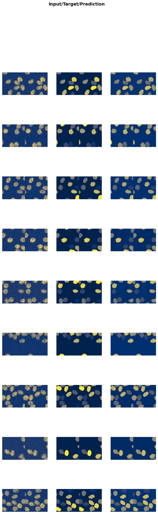
Save the Trained Model
In the next cell, we will save the trained model to a file. This step is crucial to preserve the model’s weights and architecture, allowing you to load and use the model later without retraining it.
trainer.save('tmp-model'): This function saves the model to a file named ‘tmp-model’. You can change the filename to something more descriptive based on your project.
Suggestions for customization: - Change the filename to include details like the model architecture, dataset, or date (e.g., ‘unet_resnet34_U2OS_2023’). - Save the model in a specific directory by providing the full path (e.g., ‘models/unet_resnet34_U2OS_2023’). - Save additional information like training history, metrics, or configuration settings in a separate file for better reproducibility.
Saving the model ensures that you can easily share it with others or deploy it in a production environment without needing to retrain it.
# trainer.save('3dseg-model')Evaluate the Model on Test Data
In the next cell, we will evaluate the performance of the trained model on unseen test data. This step is crucial to get an unbiased evaluation of the model’s performance and understand how well it generalizes to new data.
test_X_path: The path to the directory containing the low-resolution test images.test_data: ADataLoaderobject created from the test images.evaluate_model(trainer, test_data, metrics=SSIMMetric(2)): This function evaluates the model on the test dataset using the specified metrics (in this case, SSIM).
Suggestions for customization: - Change the
test_X_pathvariable to point to a different test dataset. - Add more metrics to themetricsparameter to get a comprehensive evaluation (e.g.,MSEMetric(),MAEMetric()). - Save the evaluation results to a file for further analysis or reporting.
Evaluating the model on test data helps in understanding its performance in real-world scenarios and identifying any areas that may need further improvement.
test_data = test_biodataloader(data, output_directory + '/patches_test.csv')
# print length of test dataset
print('test images:', len(test_data.items))
evaluate_model(trainer, test_data, metrics=metrics, cmap='cividis');test images: 433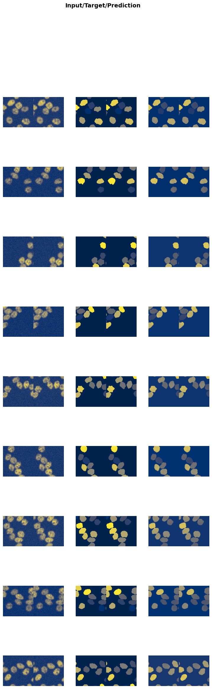
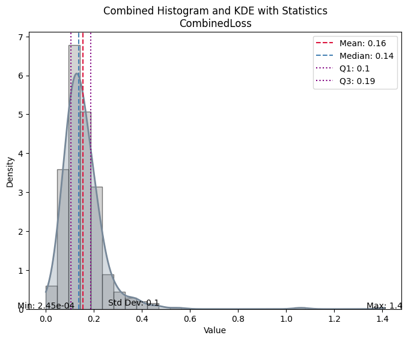
| Value | |
|---|---|
| CombinedLoss | |
| Mean | 0.155318 |
| Median | 0.137646 |
| Standard Deviation | 0.104736 |
| Min | 0.000245 |
| Max | 1.409755 |
| Q1 | 0.104679 |
| Q3 | 0.188011 |
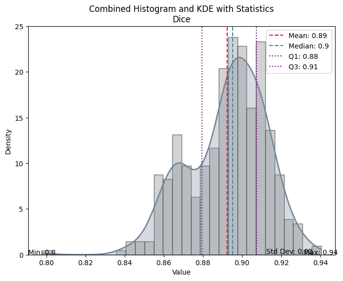
| Value | |
|---|---|
| Dice | |
| Mean | 0.892396 |
| Median | 0.895303 |
| Standard Deviation | 0.019884 |
| Min | 0.797854 |
| Max | 0.940397 |
| Q1 | 0.879513 |
| Q3 | 0.907261 |
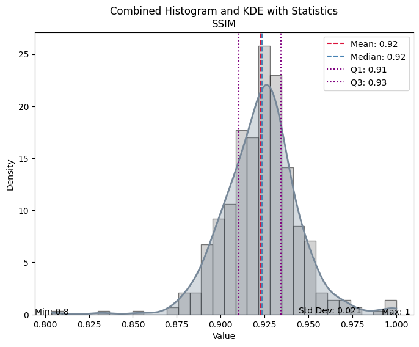
| Value | |
|---|---|
| SSIM | |
| Mean | 0.922939 |
| Median | 0.923668 |
| Standard Deviation | 0.021461 |
| Min | 0.803995 |
| Max | 0.999956 |
| Q1 | 0.910203 |
| Q3 | 0.934420 |
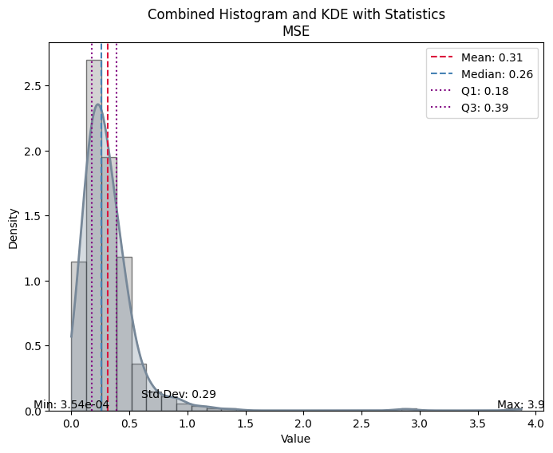
| Value | |
|---|---|
| MSE | |
| Mean | 0.314204 |
| Median | 0.260658 |
| Standard Deviation | 0.285008 |
| Min | 0.000354 |
| Max | 3.874035 |
| Q1 | 0.178327 |
| Q3 | 0.389348 |
p, t = trainer.get_preds(dl=test_data)n = 0
from bioMONAI.visualize import mosaic_image_3d, plot_volume, visualize_slices
mosaic_image_3d(t[n], cmap='cividis', figsize=(10,5), nrow=8);
mosaic_image_3d(p[n], cmap='cividis', figsize=(10,5), nrow=8);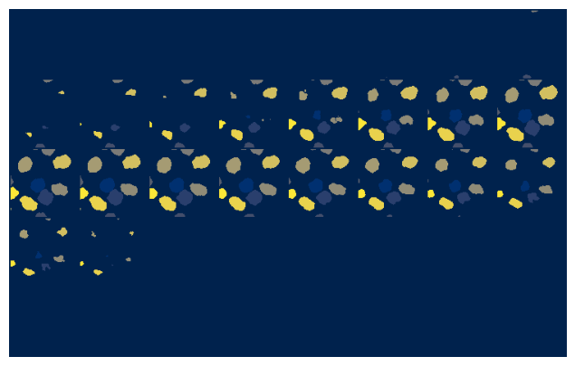
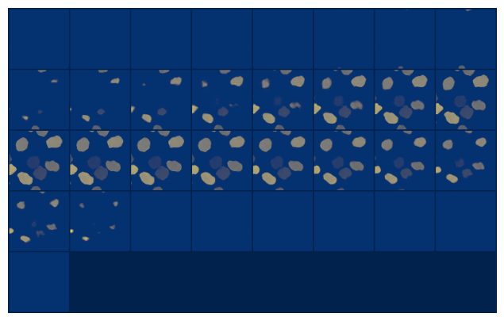
plot_volume(p[n].numpy(), min=0.5, max=11, opacity=.4, colorscale='cividis');Unable to display output for mime type(s): application/vnd.plotly.v1+json